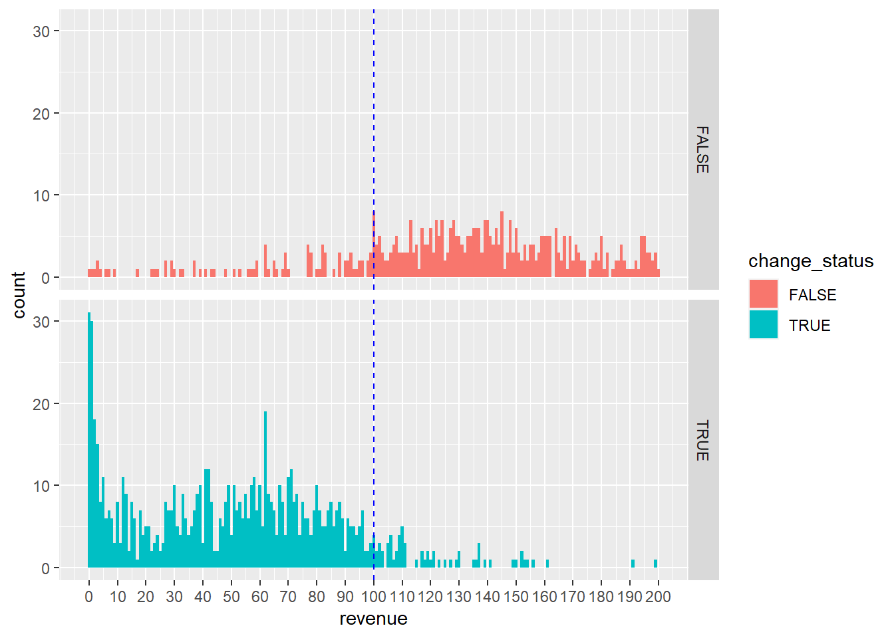
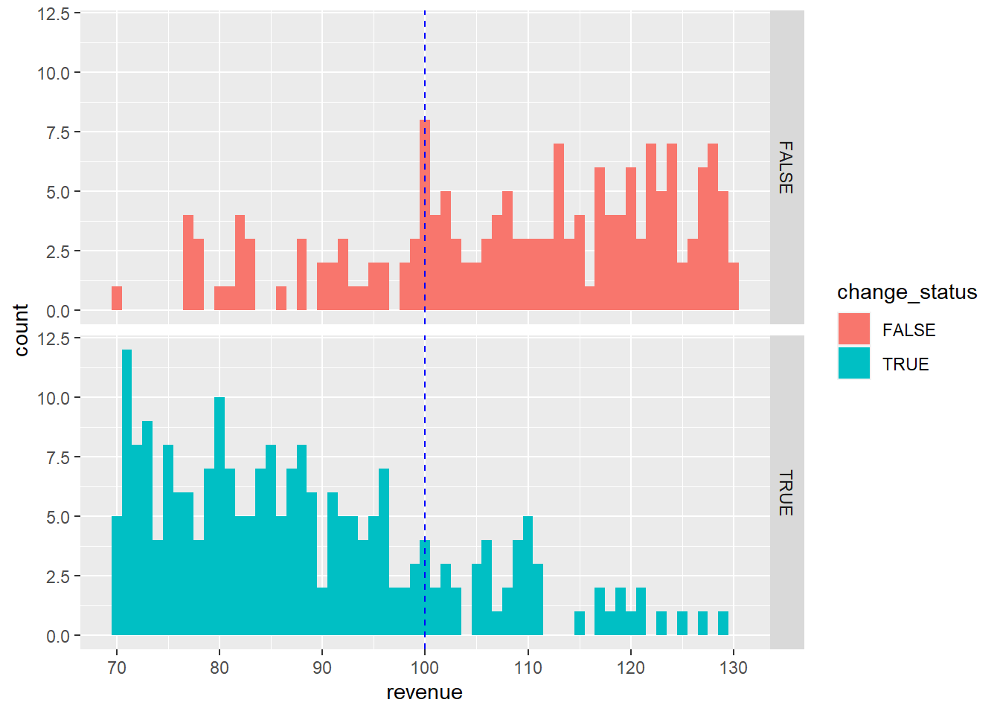

| The number of observations | ||||
| seq | pre_accel_filer | pfloat | change_status | n |
|---|---|---|---|---|
| 1 | FALSE | 1) below 75 | FALSE | 812 |
| 2 | FALSE | 1) below 75 | TRUE | 2 |
| 3 | FALSE | 2) between 75 and 700 | FALSE | 539 |
| 4 | FALSE | 2) between 75 and 700 | TRUE | 90 |
| 5 | FALSE | 3) above 700 | FALSE | 34 |
| 6 | FALSE | 3) above 700 | TRUE | 153 |
| 7 | TRUE | 1) below 75 | FALSE | 17 |
| 8 | TRUE | 1) below 75 | TRUE | 148 |
| 9 | TRUE | 2) between 75 and 700 | FALSE | 1096 |
| 10 | TRUE | 2) between 75 and 700 | TRUE | 727 |
| 11 | TRUE | 3) above 700 | FALSE | 4115 |
| 12 | TRUE | 3) above 700 | TRUE | 20 |
Filer Status
How many firms changed their filer status?
1. ‘seq 2)’ below 75: The firm has been switched from ‘non’ -> ‘acc’
Issue: Even though ‘pfloat’ is below 75, why have these firms been switched ‘acc’?
1) 014112: pfloat is $36,716,000 but they have check as ‘acc’
2) 018978: there is no tick and pfloat is $26,794,876
- Ian: From “seq 2” and GVKEY 014112, you are right, accelerated filer and public float of $36,716,000. But public float in the previous year (2021) was $137,599,000. For some reason it’s not an accelerated filer in 2021, but perhaps should’ve been. If it had been in 2021, that might’ve explained why it was in 2022. But for the other case, public float is $233,409,937 in the relevant year. So no errors here, it seems.]
[CJ: For GVKEY 014112 case, there was significant increase on their stock price in 2021 . Thus, as you mentioned, they should have been accelerated filer in 2021 and non-accelerated following year (moreover they received ICFR audits in 2021, meaning that they are an accelerated filer). I think this should be opposite.] NASDAQ: FKWL For GVKEY 018978 case, I can still see $26,794,876.
[Ian: It should be possible to scrape the public float data from SEC pretty easily in recent years due to use of XBRL.]
[CJ: Thank you for your suggestion. I will review some postings to understand how to extract public float data from XBRL.]
[Ian: Does the field “matchqu_tso_markcap” have anything to do with public float? I’d guess not, but I don’t understand why Audit Analytics doesn’t grab the public float number.]
[CJ: To remove the restatements from my dataset, I use ‘matchqu_tso_markcap’ as a criterion, since the restatements do not contain ‘matchqu_tso_markcap’)]
2. ‘seq 4)’ between 75 and 700: The firm has been switched from ‘non’ -> ‘acc’
Issue: Just check whether they had less than $75 pfloat during the pre-priod and more than $75 during the post
1) There is no firm with a float below $75M during the post-period -> ‘acc’
2) There are some firms with a float above $75M during the pre-period. But it may be because of inaccurate pfloat (mktcap)
-> No Issues (Need to use true public float)
3. ‘seq 5)’ above 700: The firm has been ‘non’ during the pre and post.
Issue: Even though ‘pfloat’ is above 700, why are these firms ‘non’?
1) Some do not have a ‘pre_mktcap’. I will remove these firms because a firm with no pre_mktcap is considered ‘non’ dueing the pre_period.
2) After removing the firms without ‘pre_mktcap’, there are 12 firms left. Most of these are emerging growth companies, which are also exempt from SOX 404.
3) [Important] The majority of these emerging growth companies are marked as ‘non’, even though their float exceeds $75M. I believe they should be designated as ‘accelerated’ or ‘large filers’ when their float exceeds $75M. I need to review this regulation
-> Need to add code to remove the firm with no ‘pre_mktcap’
-> Need to further explore the regulation on emerging growth companies
4. ‘seq 7)’ below 75: The firm was switched to ‘acc’ status even though public float was less than $75M
Issue: Even though ‘pfloat’ is less than $75, why these firms have been still ‘acc’?
1) [Important] I have found that there are distinct entry and exit (or transition) thresholds. Notably, the exit threshold is set lower than the entry threshold. 2) “An issuer whose public float previously exceeded the $75 million initial threshold for accelerated filer status would become a non-accelerated filer if its public float fell below $60 million, or 80% of that initial threshold, as opposed to the current threshold of $50 million”. Please see the detail the table below.
-> Need to further analysis. For potential entry firms = $100 / for potential exit firms = $80
-> For example, potential entry firms may have incentive to report their revenue just less than $100M while potential exit firms may have incentive to report their revenue just less than $80M (Need to further study)
-> I think the distinct entry and exit (or transition) thresholds could be interesting topic. (p.51-54 ‘Final rule’)
| Filer Status | Entry | Exit |
|---|---|---|
| large | > $700M | < $560M |
| acc | > $75M | < $60M |
| non | < $75M |
| Revenue (SRC) | Entry | Exit |
|---|---|---|
| acc | > $100M | < $80M |
| non | < $100M |
5. ‘seq12)’ above 700: The firm has been switched to ‘non’ despite having more than 700
Issue: Even though ‘pfloat’ is more than $700, why these firms have been switched to ‘non’?
1) The actual float might be lower than the ‘mktcap,’ suggesting that the real public float could be under $700 million in this group. Therefore, if those companies have less than $100 million in revenue, they are classified as ’non-accelerated filers. Therfore, no issue.
2) After filtering the firms with over $100 million in revenue, there are three firms left (the firms with less than $100 million in revenue could be ‘non’. Thus, no issue). Each of these firms has less than $700 million in public float and over $100 million in revenue. Therefore, they should be categorized as ‘ACC’. I will remove those three firms
**-> No Issue
Update data!
1. Update
- Based on the analysis above, I will update the dataset and show the final number of firms.
post_amendment <-
post_period |>
filter(!gvkey %in% c(018978, 014112)) |> # from 'seq 2'
filter(!is.na(pre_mktcap)) |> # from 'seq 5'
filter(!gvkey %in% c(015582, 022817, 025348, 035255, 035280, 035091,
032941, 033719, 035267)) |> # from 'seq 5'
filter(!gvkey %in% c(004093, 175269, 004367)) # from 'seq 12'2. The final number of firms
| The number of observations | ||||
| seq | pre_accel_filer | pfloat | change_status | n |
|---|---|---|---|---|
| 1 | FALSE | 1) below 75 | FALSE | 758 |
| 2 | FALSE | 1) below 75 | TRUE | 1 |
| 3 | FALSE | 2) between 75 and 700 | FALSE | 426 |
| 4 | FALSE | 2) between 75 and 700 | TRUE | 67 |
| 5 | FALSE | 3) above 700 | FALSE | 12 |
| 6 | FALSE | 3) above 700 | TRUE | 94 |
| 7 | TRUE | 1) below 75 | FALSE | 17 |
| 8 | TRUE | 1) below 75 | TRUE | 144 |
| 9 | TRUE | 2) between 75 and 700 | FALSE | 1078 |
| 10 | TRUE | 2) between 75 and 700 | TRUE | 716 |
| 11 | TRUE | 3) above 700 | FALSE | 4036 |
| 12 | TRUE | 3) above 700 | TRUE | 17 |
3-1. The number of potential exit firms

- As we can see in the plot above, there are many switchers below the threshold. This means that many firms actually have benefited from the 2020 amendment.
- I assume that $100M is used for revenue test (not 80 transition threshold).
- To determine if there is any discontinuity around the threshold, I will narrow the revenue interval. I expect that if the manager has incentive to become ‘NON’, there are much more firm just below the threshold.
3-2. The number of potential exit firms

- It appears that there are more firms just below the threshold, but it is not a clear trend. Because I anticipated a significantly larger number of firms just below the threshold (e.g., 90-100), I am now wondering whether there is a discontinuity in this plot. Moreover, even if I can determine that there is a discontinuity, I also wonder whether I can argue that this is due to firms intentionally reporting their revenue just below the threshold.